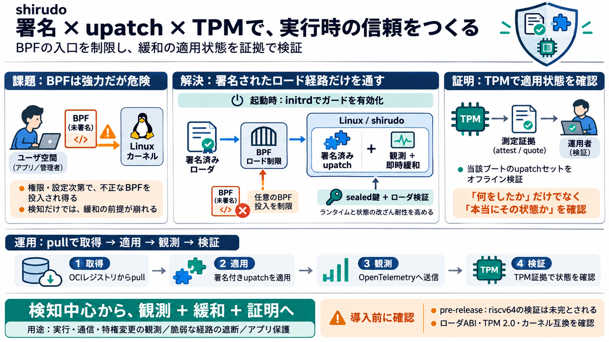

Cisco and OpenAI launch Shirudo, an open source security tool By Investing.com
Shirudo, Japanese for "shield," uses eBPF technology, which runs small programs inside an operating system kernel withou…

shirudoは、LinuxのBPFロードを「署名された経路」に限定し、署名済みマイクロパッチ（upatch）とTPM測定証拠で“適用状態”を検証しながら運用するプラットフォームです。
通常、（権限や設定次第で）攻撃者はユーザ空間からBPFプログラムを読み込めてしまい得ます。すると“検知だけ”ではなく“緩和（mitigation）”を成立させる前に、挿し込まれたBPFで盤面が崩れます。
initrd（初期RAMディスク）経由でガードを取り付け、shirudo自身と状態を保護することで“起動前後の隙”を減らします。
TPMの測定（attest/quote）により、どの upatch セットが当該ブートでロードされたかをオペレータがオフライン検証できます。見せかけだけを作る試みを、証拠の突合で難しくします。
ターゲットはOCIレジストリからワンショットでパッケージを取得し、テレメトリはOpenTelemetryコレクタへ送る“pullベース”の運用を志向します。
プロセス実行・ネットワーク・特権変更の観測、脆弱経路の遮断、アプリコード保護、コンテナ/Kubernetes/LLM向けポリシー適用などがユースケースとして挙げられています。
オペレータの署名鍵がないroot相当の攻撃者でも、shirudoのランタイムや状態を壊しにくくする設計が掲げられています。鍵となるのは“許可されたロード経路”と“状態証明”の組合せです。
公開情報からはpre-releaseであり、特にriscv64ターゲット検証が未完といった制約が示唆されています。導入前に、署名済みローダABI適合・TPM 2.0・カーネルパッチ適用などを慎重に確認する必要があります。
shirudoは、BPFロードの署名制限・署名済みupatch（アップッチ：micro patch）・TPM測定証拠を一つの枠組みに統合し、状態の改ざん耐性を狙います。
References（抜粋）
・本稿入力（README中心の抜粋）に基づく整理：boot-time enforcement、署名済みローダ経由、upatch、sealed鍵、TPM attestation、OCI pull配布、OpenTelemetry連携、制約（pre-release / riscv64検証未完示唆）。
・Web/過去履歴の要約メモ：Cisco×OpenAI発表での“shield”の署名位置づけ、LPC 2026講演案内での署名付きBPF・資産シール（LSM言及）、ただしTPM検証詳細はこの抜粋範囲では未確認。
Shirudo, Japanese for "shield," uses eBPF technology, which runs small programs inside an operating system kernel withou…
BPF is the natural vehicle for on-the-fly live mitigations and runtime visibility - to the kernel itself as well as to u…
We use GitHub to track issues and accept contributions. If you'd like to raise an issue or open a pull request with chan…
# SHIRUDO Cybersecurity Awareness As A Service - Serious Game & Phishing Simulation Platform ID: 139yrd6u5naW Website: w…
Given its innovative approach to security and community engagement, it's vital for potential investors to conduct thorou…